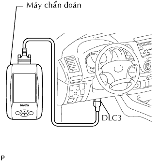

CÁCH KHẮC PHỤC HƯ HỎNG CÁC HỆ THỐNG DO ECU ĐIỀU KHIỂN > THÔNG TIN CHUNG
Một số lượng lớn hệ thống được ECU điều khiển đã được sử dụng trên xe INNOVA của TOYOTA. Nói chung, hệ thống điều khiển ECU được xem như một hệ thống rất phức tạp nên cần có kiến thức kỹ thật ở trình độ cao và kỹ năng thành thạo để xử lý sự cố. Tuy nhiên, thực tế là nếu bạn tiến hành kiểm tra từng mạch điện một thì việc xử lý sự cố các hệ thống này là không đến nỗi quá phức tạp. Nếu bạn có hiểu biết đầy đủ về hệ thống và kiến thức cơ bản về điện, có thể thực hiện việc chẩn đoán chính xác và sửa chữa cần thiết.

KHI DÙNG MÁY CHẨN ĐOÁN
Nối cáp của máy chẩn đoán với giắc DLC3, bật khoá điện ON và thử dùng máy chẩn đoán. Nếu màn hình hiển thị chỉ ra có lỗi kết nối, nghĩa là đã có trục trặc hoặc là ở phía xe hoặc là phía dụng cu.
Nếu sự liên lạc là bình thường khi máy chẩn đoán được nối với xe khác, hãy kiểm tra DLC3 của xe ban đầu.
Nếu kết nối vẫn không thực hiện được khi máy chẩn đoán được nối với xe khác, trục trặc chắc chắn là trong máy chẩn đoán, nên hãy thực hiện quy trình Tự kiểm tra mô tả trong Hướng dẫn sử dụng của máy chẩn đoán.